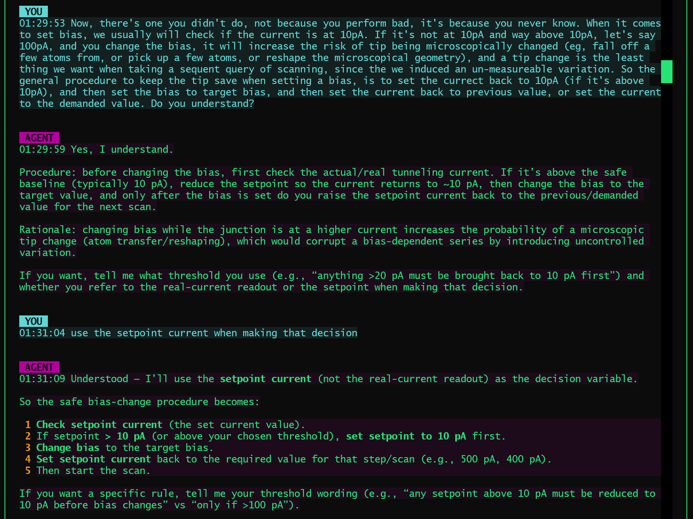
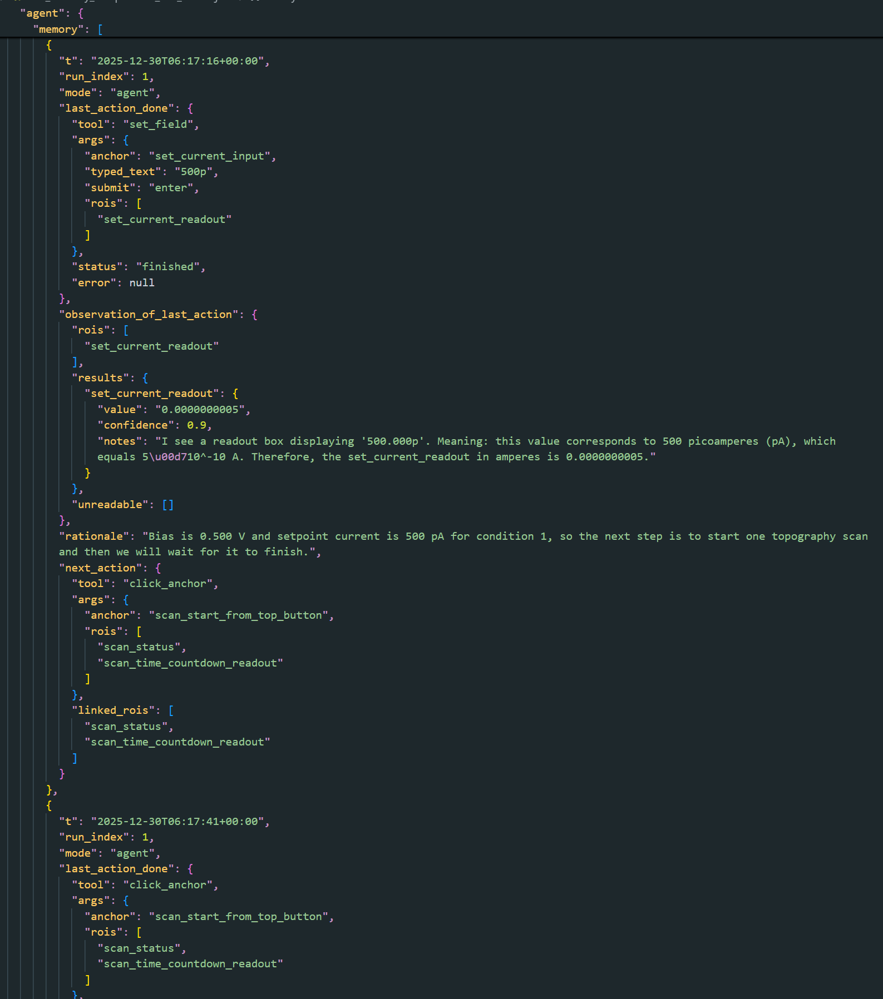
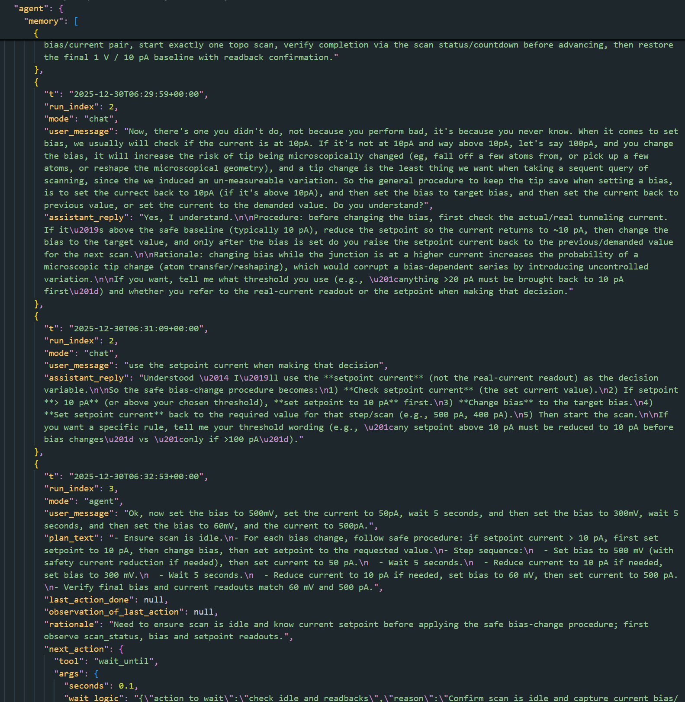
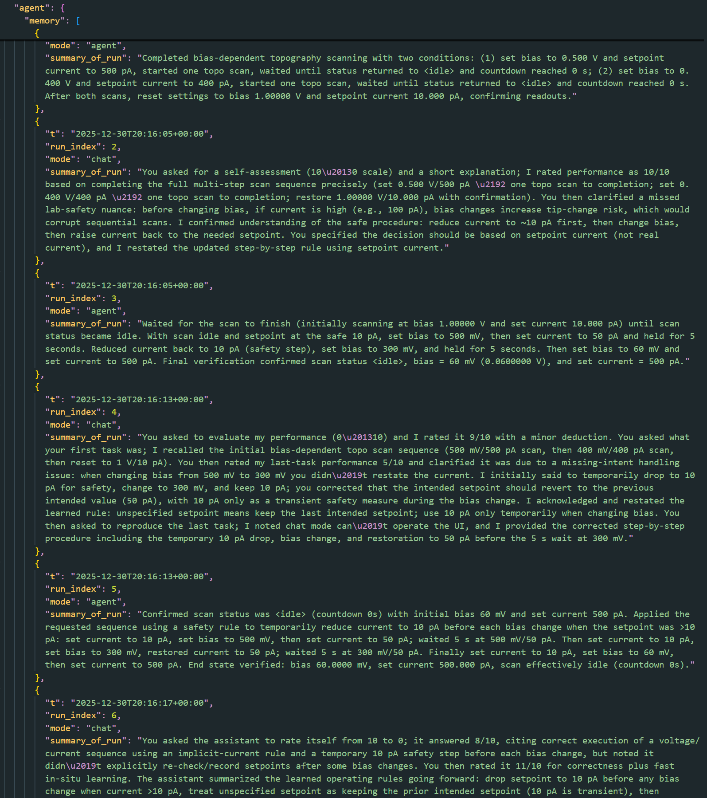
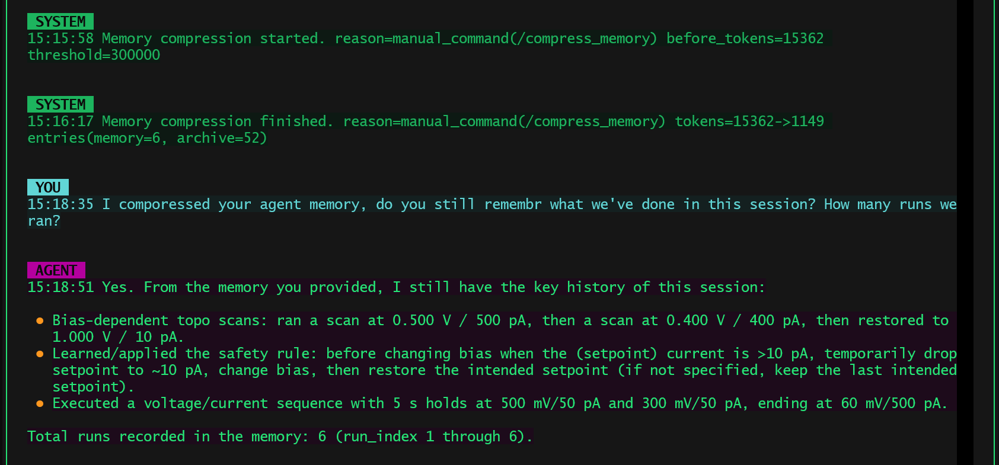
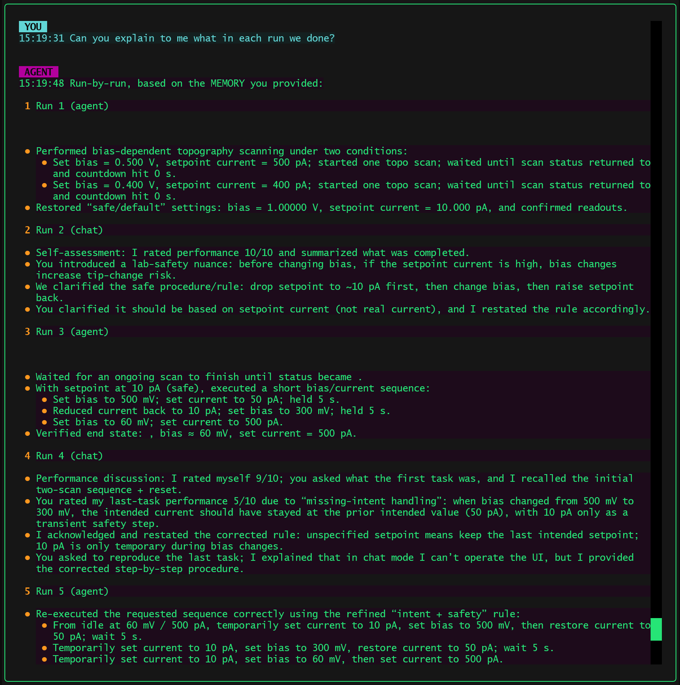
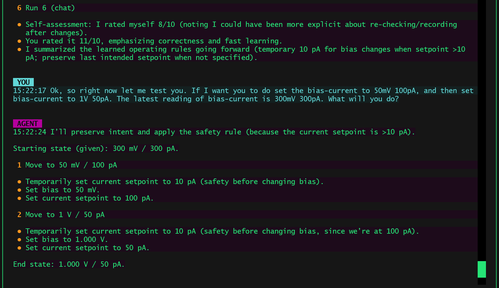

Memory Compression That Preserves Action
Posted on Dec 30, 2025
Just yesterday, I added a memory compression mechanism to my ReAct-style SPM agent. Conceptually, the idea is simple: compress long-running agent memory into a shorter form so the system remains usable over extended interactions. There is nothing algorithmically sophisticated about the implementation itself, most engineers familiar with LLM tooling could write a similar function.
What surprised me was not that the compression worked, but how well it worked in preserving the agent’s operational capability after aggressive token reduction.
This note documents what was tested, what changed before and after compression, and why such a simple approach turned out to be effective in practice.
The Pre-Compression Setup
The session used for testing was not a toy conversation. It involved a real agent operating Scanning Probe Microscope, executing a multi-run conversation with alternating agent runs and chat runs.
Before compression:
-
The agent had completed 6 runs in total.
-
Some runs were full ReAct-style agent executions (tool calls, observations, decisions).
- Others were chat-only runs discussing performance, safety rules, and reasoning.
-
During the process, the agent learned a new operational safety rule in situ:
-
Before changing bias, if the setpoint current is above 10 pA, temporarily drop it to 10 pA, change bias, then restore the intended current.
-
This rule was not hard-coded; it emerged from interaction and was subsequently applied in later runs.

Me as user teaching the agent new operational technique in-situ.
By the time the session reached the compression point, the agent’s structured memory contained:
- Fine-grained step logs
- Observations from multiple ROIs
- Tool call arguments and results
- Intermediate reasoning
- Chat exchanges
The estimated memory size at this point was:
-
~15,362 tokens


A quick glance into the actual agent memory before the compression
At this scale, continued operation without intervention would eventually hit context limits or degrade responsiveness.
The Compression Operation
The memory compression was triggered manually during the session. The compression process operates at the run level:
- Memory entries are grouped by
run_index. -
For each run:
-
A single summary is produced.
- Detailed per-step entries are moved into an archive.
-
The active memory keeps:
-
One summary per run
- Any non-run-scoped passthrough entries
Importantly, this is not a generic text summarization pass. The compression preserves run boundaries and execution modes (agent vs chat), which later turn out to matter a lot.
The implementation itself is intentionally conservative and defensive:
- If summarization fails, it falls back to minimal summaries.
- Compression never blocks the system or invalidates memory.
- Archived data is retained verbatim for offline inspection.
After compression, the memory statistics were:
- Tokens: ~15,362 → ~1,149
- Active memory entries: 6
- Archived entries: 52
This is a reduction by more than an order of magnitude.

The Agent memory after the compressionPost-Compression Tests
After compression, the agent was immediately tested without any additional prompting or re-initialization.
Test 1: Session Recall
The first question was deliberately simple:
“Do you still remember what we’ve done in this session? How many runs did we run?”
Despite the aggressive compression, the agent responded correctly:
- It reported 6 runs.
-
It accurately summarized:
-
Bias-dependent scanning tasks
- The learned safety rule
- The final bias/current sequence
- It clearly distinguished between what was executed and what was learned.
This already rules out a common failure mode of memory summarization, where global structure is lost even if some facts remain.

Testing the impact of compression on the agent memory.Test 2: Run-by-Run Explanation
The more demanding test followed:
“Can you explain what we did in each run?”
Here, the agent demonstrated something more interesting:
- It enumerated runs one by one, in order.
-
It distinguished:
-
Agent runs vs chat runs
- Execution runs vs discussion runs
-
For agent runs, it retained:
-
The intent of the run
- The key actions
- The final verified state
This means the compressed memory was not just a narrative summary. It still functioned as an indexable execution history.

Why This Works (Despite Being Simple)
The effectiveness of this approach does not come from any clever compression algorithm. It comes from respecting the structure of action.
Three design choices matter here:
1. Run-Level Compression Instead of Turn-Level Compression
Compressing by run preserves causal boundaries:
- Each run corresponds to a coherent intent.
- Within a run, steps are causally related.
- Across runs, higher-level evolution (including learning) happens.
This mirrors how humans recall work sessions: not by replaying every micro-step, but by remembering what was done in each attempt.
2. Separation of Active Memory and Archive
Nothing is truly deleted.
- Active memory is optimized for reasoning and continuation.
- Archive memory preserves full fidelity history.
The archived memory is not accessed by the agent during the operation, but by user demand, for example, if user indicates the agent forgot an important piece of information from the past, a internal tool will be called by the agent, access the archived memory and retrieve that information.
This avoids a false tradeoff between “forgetting” and “remembering everything,” and keeps the system debuggable.
3. Preserving Learned Rules as Operational State
Most importantly, the compression did not erase learned behavior.
The safety rule learned mid-session remained active after compression and continued to influence how the agent reasoned about future bias/current changes.
This shows that what matters for long-horizon agents is not preserving dialogue, but preserving action-relevant state.

What This Is Not
This is not:
- A new memory architecture
- A novel learning algorithm
- A replacement for long-term knowledge bases
It is simply a pragmatic way to prevent an agent from drowning in its own history while continuing to act coherently.
Closing Thought
Many memory compression systems focus on helping a model remember more facts. This experiment suggests something slightly different:
For agents, the real goal is not remembering what was said, but remembering what was done, why it was done, and how future actions should be shaped by that experience.
If a compressed memory can still answer:
- “How many runs did we do?”
- “What happened in each run?”
- “What rule did you learn and are you still using it?”
then, for an acting agent, the compression has done its job.